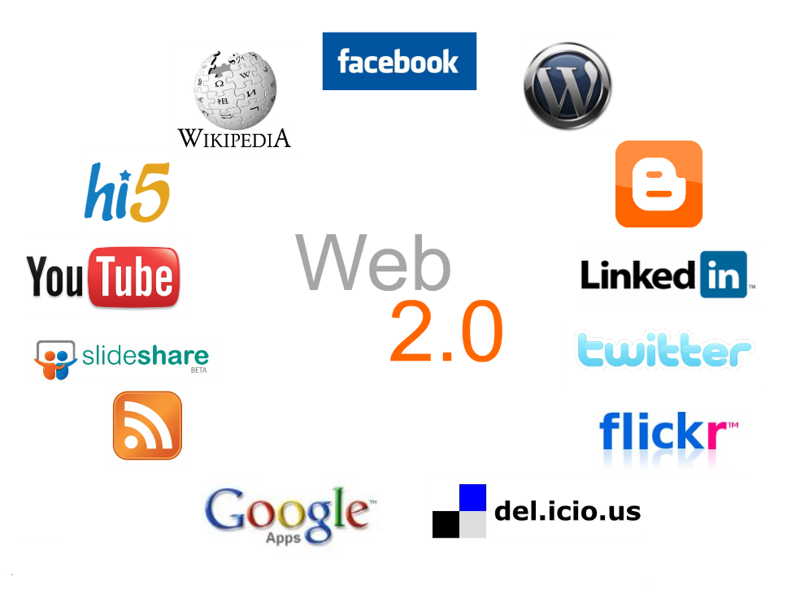

| Versión de la Web |
Suceso |
Web 1.0
|
1990 Desaparición de ARPANET |
|---|
1991 Creación de la Web a manos de Tim Berners-Lee |
1992 Fundación de Internet Society |
1993 Aparición de Mosaic, primer navegador |
1995 Surge SSL y se incorpora JavaScript |
1998 Creación de Google y consolidación del Correo Electrónico |
Web 2.0
 |
2000 Surge la Web 2.0 |
|---|
2004 Tim O'Reilly define la Web 2.0 |
2004 Lanzamiento de las primeras Redes Sociales |
2008 Lanzamiento de Google Chrome |
Web 3.0
|
2010 Nace la Web 3.0 |
|---|
Web 4.0
|
2015 Nace la Web 4.0 |
|---|